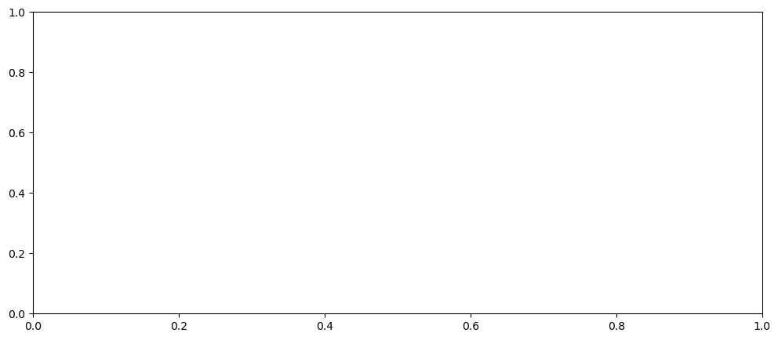
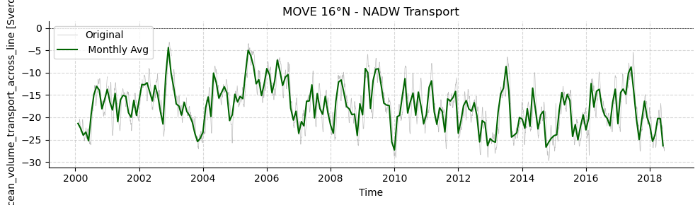
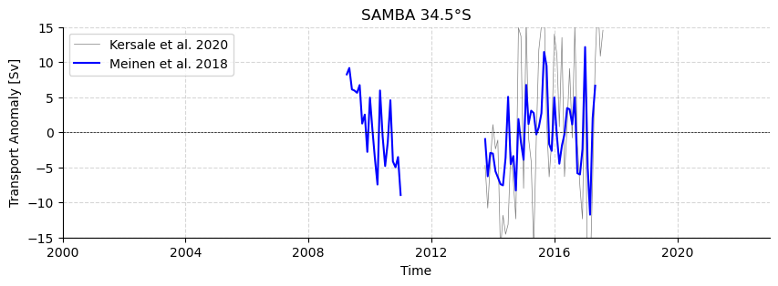
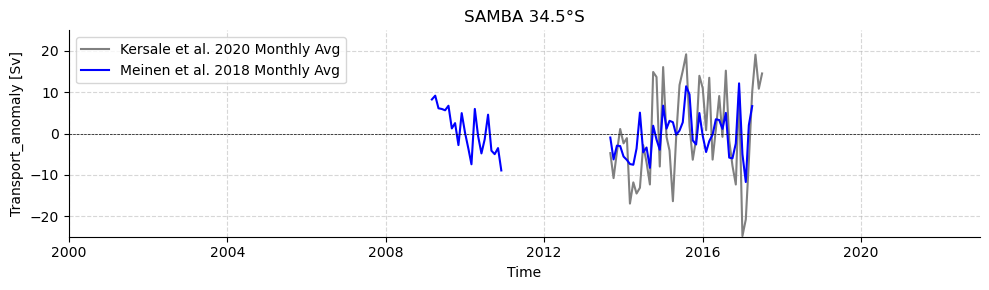

AMOCarray demo
The purpose of this notebook is to demonstrate the functionality of AMOCarray.
The demo is organised to show
Step 1: Loading and plotting a sample dataset
Step 2: Exploring the dataset attributes and variables.
Note that when you submit a pull request, you should clear all outputs from your python notebook for a cleaner merge.
[1]:
import pathlib
import sys
script_dir = pathlib.Path().parent.absolute()
parent_dir = script_dir.parents[0]
sys.path.append(str(parent_dir))
import importlib
import xarray as xr
import os
from amocarray import readers, plotters, standardise
[2]:
# Specify the path for writing datafiles
data_path = os.path.join(parent_dir, 'data')
Load RAPID 26°N
[3]:
# Load data from data/moc_transports
ds_rapid = readers.load_sample_dataset()
ds_rapid = standardise.standardise_rapid(ds_rapid)
/home/runner/work/amocarray/amocarray/amocarray/standardise.py:39: UserWarning: rename 'time' to 'TIME' does not create an index anymore. Try using swap_dims instead or use set_index after rename to create an indexed coordinate.
ds = ds.rename({'time': 'TIME'})
[4]:
import matplotlib.pyplot as plt
# Resample the dataset to monthly averages
ds_monthly = ds_rapid.resample(TIME='ME').mean()
# Initialize the figure and axes with a specific figure size
fig, axes = plt.subplots(figsize=(8, 3))
# Plot the original dataset in thin grey
plt.plot(ds_rapid['TIME'], ds_rapid['moc_mar_hc10'], color='grey', alpha=0.5, linewidth=0.5, label='Original')
# Plot the monthly averaged dataset in thick red
plt.plot(ds_monthly['TIME'], ds_monthly['moc_mar_hc10'], color='red', linewidth=1, label='Monthly Average')
# Add a horizontal line at y=0
plt.axhline(0, color='black', linestyle='--', linewidth=0.5)
# Customize the axes
axes.spines['top'].set_visible(False)
axes.spines['right'].set_visible(False)
# Add title and labels
plt.title('RAPID 26°N - AMOC')
plt.xlabel('Time')
plt.ylabel('Transport [Sv]')
plt.legend()
[4]:
<matplotlib.legend.Legend at 0x7f1337fcae40>

Load MOVE 16°N
[5]:
datasets16 = readers.load_dataset("move")
ds_move = datasets16[0]
plotters.show_variables(ds_move)
/home/runner/.amocarray_data/OS_MOVE_TRANSPORTS.nc
information is based on xarray Dataset
/home/runner/work/amocarray/amocarray/amocarray/utilities.py:70: UserWarning: Attribute 'project' already exists in dataset attrs and will not be overwritten.
warnings.warn(
/home/runner/work/amocarray/amocarray/amocarray/utilities.py:70: UserWarning: Attribute 'comment' already exists in dataset attrs and will not be overwritten.
warnings.warn(
/home/runner/work/amocarray/amocarray/amocarray/utilities.py:70: UserWarning: Attribute 'acknowledgement' already exists in dataset attrs and will not be overwritten.
warnings.warn(
[5]:
| dims | units | comment | standard_name | dtype | |
|---|---|---|---|---|---|
| name | |||||
| TIME | TIME | time | datetime64[ns] | ||
| TRANSPORT_TOTAL | TIME | Sverdrup | ocean_volume_transport_across_line | float64 | |
| transport_component_boundary | TIME | Sverdrup | float64 | ||
| transport_component_internal | TIME | Sverdrup | float64 | ||
| transport_component_internal_offset | TIME | Sverdrup | float64 |
[6]:
# Resample the dataset to monthly averages
ds_monthly = ds_move.resample(TIME='ME').mean()
# Create a figure and axis
fig, ax = plt.subplots(figsize=(10, 3))
# Plot the total transport from the MOVE dataset in thin grey
ax.plot(ds_move['TIME'], ds_move['TRANSPORT_TOTAL'], color='grey', alpha=0.5, linewidth=0.5, label='Total Transport')
# Plot the monthly averaged dataset in thick red
ax.plot(ds_monthly['TIME'], ds_monthly['TRANSPORT_TOTAL'], color='darkblue', linewidth=1, label='Monthly Average')
# Add a horizontal line at y=0
ax.axhline(0, color='black', linestyle='--', linewidth=0.5)
# Customize the axes
ax.spines['top'].set_visible(False)
ax.spines['right'].set_visible(False)
# Add labels, title, and legend
ax.set_title('MOVE 16°N - NADW transport')
ax.set_xlabel('Time')
ax.set_ylabel('Transport [Sv]')
ax.legend()
# Customize the grid
ax.grid(True, linestyle='--', alpha=0.5)

Load OSNAP
[7]:
datasetsOSNAP = readers.load_dataset("osnap")
ds_osnap = datasetsOSNAP[0]
plotters.show_variables(ds_osnap)
/home/runner/.amocarray_data/download
information is based on xarray Dataset
/home/runner/work/amocarray/amocarray/amocarray/utilities.py:70: UserWarning: Attribute 'project' already exists in dataset attrs and will not be overwritten.
warnings.warn(
[7]:
| dims | units | comment | standard_name | dtype | |
|---|---|---|---|---|---|
| name | |||||
| MFT_ALL | TIME | Sv | float64 | ||
| MFT_ALL_ERR | TIME | Sv | Determined from a Monte Carlo analysis | float64 | |
| MFT_EAST | TIME | Sv | float64 | ||
| MFT_EAST_ERR | TIME | Sv | Determined from a Monte Carlo analysis | float64 | |
| MFT_WEST | TIME | Sv | float64 | ||
| MFT_WEST_ERR | TIME | Sv | Determined from a Monte Carlo analysis | float64 | |
| MHT_ALL | TIME | PW | float64 | ||
| MHT_ALL_ERR | TIME | PW | Determined from a Monte Carlo analysis | float64 | |
| MHT_EAST | TIME | PW | float64 | ||
| MHT_EAST_ERR | TIME | PW | Determined from a Monte Carlo analysis | float64 | |
| MHT_WEST | TIME | PW | float64 | ||
| MHT_WEST_ERR | TIME | PW | Determined from a Monte Carlo analysis | float64 | |
| MOC_ALL | TIME | Sv | maximum of the overturning streamfunction in sigma_theta coordinates | float64 | |
| MOC_ALL_ERR | TIME | Sv | Determined from a Monte Carlo analysis | float64 | |
| MOC_EAST | TIME | Sv | maximum of the overturning streamfunction in sigma_theta coordinates | float64 | |
| MOC_EAST_ERR | TIME | Sv | Determined from a Monte Carlo analysis | float64 | |
| MOC_WEST | TIME | Sv | maximum of the overturning streamfunction in sigma_theta coordinates | float64 | |
| MOC_WEST_ERR | TIME | Sv | Determined from a Monte Carlo analysis | float64 | |
| TIME | TIME | Start date of each month | time | datetime64[ns] |
Load SAMBA 34.5°S
[8]:
datasets34S = readers.load_dataset("SAMBA")
standardised_datasets = [standardise.standardise_samba(ds, ds.attrs["source_file"]) for ds in datasets34S]
/home/runner/.amocarray_data/Upper_Abyssal_Transport_Anomalies.txt
/home/runner/.amocarray_data/MOC_TotalAnomaly_and_constituents.asc
/home/runner/work/amocarray/amocarray/amocarray/utilities.py:70: UserWarning: Attribute 'comment' already exists in dataset attrs and will not be overwritten.
warnings.warn(
/home/runner/work/amocarray/amocarray/amocarray/utilities.py:70: UserWarning: Attribute 'weblink' already exists in dataset attrs and will not be overwritten.
warnings.warn(
/home/runner/work/amocarray/amocarray/amocarray/utilities.py:70: UserWarning: Attribute 'acknowledgement' already exists in dataset attrs and will not be overwritten.
warnings.warn(
[9]:
# Extract the upper and abyssal transport data
ds = standardised_datasets[0]
upper_transport = ds['UPPER_TRANSPORT']
ds2 = standardised_datasets[1]
moc_meinen = ds2['MOC']
# Resample the dataset to monthly averages
upper_transport_monthly = upper_transport.resample(TIME='ME').mean()
moc_meinen_monthly = moc_meinen.resample(TIME='ME').mean()
# Create a figure and axis
fig, ax = plt.subplots(figsize=(10, 3))
# Plot the original upper transport in thin blue
ax.plot(upper_transport_monthly['TIME'], upper_transport_monthly, color='grey', linewidth=0.5, label='Kersale et al. 2020')
ax.plot(moc_meinen_monthly['TIME'], moc_meinen_monthly, color='blue', alpha=1, linewidth=1.5, label='Meinen et al. 2018')
# Add a horizontal line at y=0
ax.axhline(0, color='black', linestyle='--', linewidth=0.5)
# Customize the axes
ax.spines['top'].set_visible(False)
ax.spines['right'].set_visible(False)
# Add labels, title, and legend
ax.set_title('SAMBA 34.5°S')
ax.set_xlabel('Time')
ax.set_ylabel(f"{upper_transport.attrs['standard_name']} [{upper_transport.attrs['units']}]")
ax.legend()
# Set the x-axis limits from 2000 to 2022
import pandas as pd
ax.set_xlim([pd.Timestamp('2000-01-01'), pd.Timestamp('2022-12-31')])
# Set the y-axis limits from -15 to 15
ax.set_ylim([-15, 15])
# Customize the grid
ax.grid(True, linestyle='--', alpha=0.5)

[10]:
importlib.reload(plotters)
plotters.plot_monthly_anomalies(
osnap_data=ds_osnap['MOC_ALL'],
rapid_data=ds_rapid['moc_mar_hc10'],
move_data=-ds_move['TRANSPORT_TOTAL'],
samba_data=standardised_datasets[1]['MOC'],
osnap_label='OSNAP',
rapid_label='RAPID 26°N',
move_label='MOVE 16°N',
samba_label='SAMBA 34.5°S'
)

[ ]: